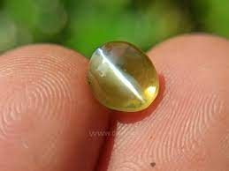

Ruby's distinctive red color results from the presence of chromium, and it is regarded as the most precious gemstone variant in the Corundum mineral species. The orange-red to purplish red color range of rubies may be found all over the world. The primary determinant of a ruby's worth is its color, which ranges from a bright, vivid red to a faintly purplish red in fine jewels.
The majority of Sri Lankan ruby variants exhibit a pinkish red color and a purple tinge as a result of the presence of iron in addition to chromium oxide, which is specific to the country of origin of this gemstone. Ruby deposits in Sri Lanka are not particularly specific; they are found in the same mine as other corundum-family jewels. However, the better-quality stones are frequently discovered in the Embilipitiya-Udawalawe region.
The color of a sapphire can range from blue through violet, green, yellow, orange, pink, purple, and intermediate colours known as fancy sapphires, but blue is the hue most commonly associated with sapphires.Sri Lanka is the world's leading exporter of the best Ceylon Sapphires, including Ceylon Blue Sapphire, Padparadscha, Star Sapphires, and a variety of Fancy Sapphires.
Sapphires are not just pretty stones, they also have practical uses like infrared optical components, durable windows, wristwatch crystals, electronic parts, and insulating substrates for electronics like LED lights.
Garnet gems can be found in many different colors, except for blue. There are six different kinds of garnet gems: almandine, andradite, grossular, pyrope, spessartine, and uvarovite. Most types of Garnets can be found in Sri Lanka, except for andradite and uvarovite. They can have special features like asterism, chatoyancy, and a color change depending on the lighting.
All garnets have essentially the same crystal structure, but different chemical compositions. Garnet has more than 20 categories called species, but only five are of commercial importance as gemstones. Commercially valuable garnet varieties found in Sri Lanka include:Almandine,Grossular,Pyrope and Spessartine
Chrysoberyl(Cat's Eye)

Even though the term ‘Cat’s Eye’ is commonly used for various mineral species, the most coveted one is the rare gemstone belonging to the Chrysoberyl family. However, not all Chrysoberyls exhibit this distinct chatoyancy phenomenon. While transparent and translucent Chrysoberyls lacking a chatoyancy effect are quite widespread in Sri Lanka, cabochons of chatoyant chrysoberyls are cut to showcase their magnificent eyes, making them highly desirable in both local and global markets. The Chrysoberyl species of gemstones consist of two types, namely Cymophane and Alexandrite
Chrysoberyl is found in various levels of transparency, ranging from clear and transparent to hazy, translucent, and opaque. It is widely spread across the primary gem-producing areas of the country, mainly concentrated around Rakwana, Bulutota, Deniyaya, Morawaka, Elahera, Avissawella, Pelawatte, Horana, Matugama, Panadura, Rathnapura, Aluthgama, Ambalantota, Agalawaththa, Bulathsinghala, Kalapugama and Mestiya. The shade of Cymophane or Cat’s Eye varies from semi-transparent golden-yellow to a slightly greenish-yellow or brownish-yellow.
Aquamarine is often found completely flawless and has been discovered in various locations in Sri Lanka such as Rathnapura, Rakwana, Morawaka, Hatton, Nawalapitiya, Galle, Matara, Tissamaharama, and Lunugamwehera.
Crystals of aquamarine are discovered in shades ranging from green-blue to blue and their blue tone is attributed to the presence of iron within the crystal. These crystals are comparatively large and well-formed, with the most intense depth of sea blue colour found in large specimens while smaller stones have a comparatively lighter colour. Aquamarine differs from other coloured gemstones in that its value is primarily determined by its tone rather than its hue and saturation, with stones possessing a darker tone being highly prized and sought after.
Nevertheless, natural spinel has always been a scarce and stunning gemstone. Sri Lanka is the world's second-largest provider of spinel to the global gem and jewelry industry, with hues ranging from ruby red, pink, orange, reddish-brown, purple, blue, bluish-green, mauve, greenish-black, black, and colorless. Natural blue spinel that is colored by cobalt has been discovered in Sri Lanka. Cobalt spinel has been found in Ratnapura, Okkampitiya, and Embilipitiya. In addition to the common spinel varieties, there are also varieties known as Ceylonite, Gahnite, and Ghanospinel.
Plentiful, appealing, reasonably priced, and vivid spinels are accessible in red, pink, and blue hues and infrequently showcase asterism and chatoyancy. Spinels are a type of gemstone that can be found in large quantities in Sri Lanka, and prior to the emergence of modern gemology in the 19th and 20th centuries, spinels were frequently misidentified as Corundums since they were primarily discovered in the same mines. Further investigation into the mineral composition of these two gem families resulted in their differentiation, and many gem enthusiasts discovered that their beloved rubies and sapphires were indeed spinels.
Moonstones are a valuable gemstone that falls into the Feldspar category of minerals and are renowned for their enchanting radiance brought about by adularescence. The Meetiyagoda mines located in Sri Lanka are where the highly regarded Blue Moonstones are found. Traditional moonstones are fashioned into cabochons, but there are variations that display a cat's eye effect or a four-pointed star alongside the usual rippling play of light. These stones are not only crafted into cabochons but also into artistic cameos or etched with intricate designs.
A violet type of the crystal quartz, the supreme amethyst hue is intense reddish-purple to purple with no noticeable hue zoning. Tinted by Iron, the tones of Amethyst appear in translucent muted pinks to profound purples. Similar to numerous other precious stones, the standard of Amethyst fluctuates depending on its origin. The most exceptional types of amethyst can be discovered in Siberia, Sri Lanka, Brazil and the remote East.
Tourmaline, which can be found in all the hues of the rainbow, possesses a highly intricate mineral composition that accounts for its vivid colouration. The Tourmaline variety of gemstones originating from Sri Lanka exhibits a range of colours from yellow-green to a brilliant green. Among the significant Tourmaline gemstones discovered in Sri Lanka, the blends of Dravite and Uvite are highly prized. These species typically display shades of brown, yellow-brown, reddish-brown or almost black, and contain traces of vanadium, chromium, or both.
Rose Quartz |
Zircon |
Topaz |
Alexandrite |
Citrine |